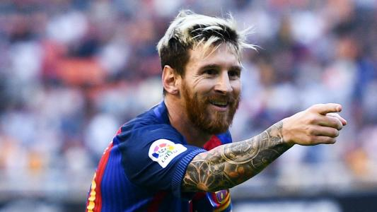
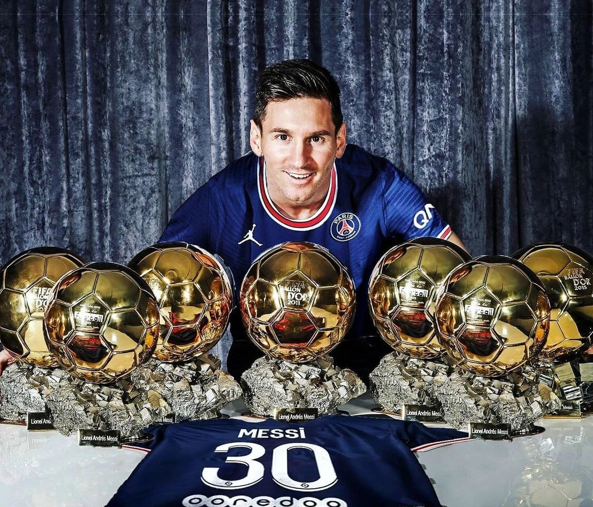

利昂内尔·梅西（Lionel Messi），全名利昂内尔·安德烈斯·梅西·库奇蒂尼（Lionel Andrés Messi Cuccitini），昵称莱奥·梅西（Leo Messi），1987年6月24日出生于阿根廷圣菲省罗萨里奥，阿根廷职业足球运动员，司职前锋，现效力于美国职业足球大联盟的迈阿密国际足球俱乐部，亦担任球队队长 。 俱乐部方面，梅西于2000年进入拉玛西亚青训营。2004年，梅西与巴塞罗那足球俱乐部签下职业合同。2009年，梅西帮助巴萨加冕六冠王，个人首次荣膺金球奖。2011年，梅西帮助巴萨加冕五冠王。2012年，梅西以91粒正式比赛进球刷新足坛单一自然年进球纪录，连续第四年荣膺金球奖。2015年，梅西再度帮助巴萨加冕五冠王，个人第五次荣膺金球奖。2019年，梅西第六次荣膺金球奖。2021年，梅西自由加盟巴黎圣日耳曼足球俱乐部，同年第七次荣膺金球奖。2023年，梅西加盟迈阿密国际足球俱乐部。 国家队方面，梅西于2005年帮助阿根廷U20青年队夺得世青赛冠军。2008年，梅西帮助阿根廷国奥队夺得北京奥运会男足金牌。2014年，梅西帮助阿根廷国家队夺得世界杯亚军，个人荣膺世界杯金球奖。2021年，梅西帮助阿根廷国家队夺得美洲杯冠军。2022年，梅西帮助阿根廷国家队夺得世界杯冠军和欧美杯冠军，个人再度荣膺世界杯金球奖。
 